Home › On your phone
How to use Decoy on your phone
Every feature, where to find it and how to set it up, step by step. It works the same on Android phones and tablets.
Getting started
- Install Decoy Launcher from Google Play and open it.
- Go through the short welcome. When Android asks which app to use as your home screen, pick Decoy Launcher and choose Always.
- Press Home. Decoy is now your home screen.
If Android didn't ask, set it yourself in the phone's Settings › Apps › Default apps › Home app.
Opening Decoy's settings
WhereHold an empty spot on the home screen›Home settings
Settings has a search box at the top: type "lock", "hide" or "grid" to go straight to it. You can also set a gesture to Open Decoy settings (see Gestures).
Most of the private features are in one place: Decoy Settings, in the main settings list.
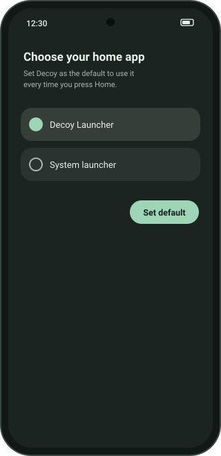
Hide apps Secret
WhereDecoy Settings›App hiding›Hide, lock, disguise & fake-crash apps
- Open the list of apps and tap the one you want to hide.
- Choose where it's hidden: the home screen, the app drawer, or both.
- Optionally, only hide it at certain times or away from your home Wi-Fi.
Hidden apps disappear from the home screen, the drawer and search. To hide an app from the drawer only, hold its icon, tap Customise and turn on Hide from app drawer.
Search Only apps
Some apps are better kept out of sight without a code. In Decoy Settings › Mindful friction › Full-Name Search Only, pick apps that only appear when someone types their exact, full name in search.
Turn on notification scrubbing in App hiding so hidden apps' notification dots don't give them away.

Bring hidden apps back Secret
With a secret code
WhereDecoy Settings›App hiding›Secret unlock code
- Choose your code.
- Open the app drawer and type the code in its search box. Every hidden app appears.
- Close the drawer and they're hidden again. Under Reveal timeout you can keep them showing for longer.
By drawing a shape
WhereDecoy Settings›Settings lock & secrets›Draw to reveal
- Draw your own shape, twice.
- Choose the gesture that opens the drawing pad, for example a double tap at the top of the screen.
- Choose what the right shape does: show the hidden apps, open a vault or the file vault.
A stealth widget can reveal them too: it looks like an ordinary widget but answers to your own tap pattern.
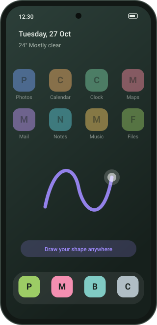
Vaults Premium
WhereDecoy Settings›App hiding›Vaults›Add a vault
A vault is a named group of hidden apps with a PIN of its own. Different PINs show different apps, so you can have a "work" vault and a "private" one, and showing one never shows the other.
- Tap Add a vault, give it a name and a PIN.
- Pick the apps that go in it.
- To open it, type the vault's PIN in the app drawer's search box.
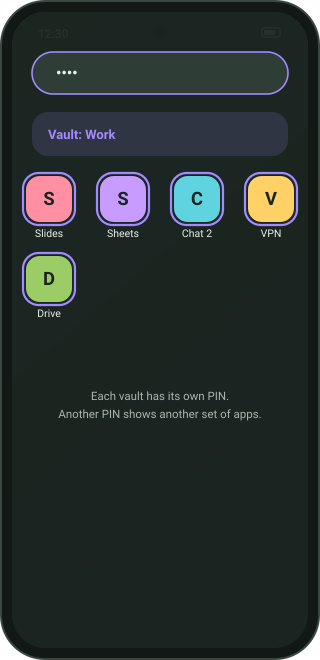
Disguise an app Secret
WhereDecoy Settings›App hiding›Hide, lock, disguise & fake-crash apps
- Tap the app in the list.
- Give it a disguise: a different name and a different icon, for example "Calculator".
The app keeps working as normal; only its name and icon change on the home screen, in the drawer and in search.
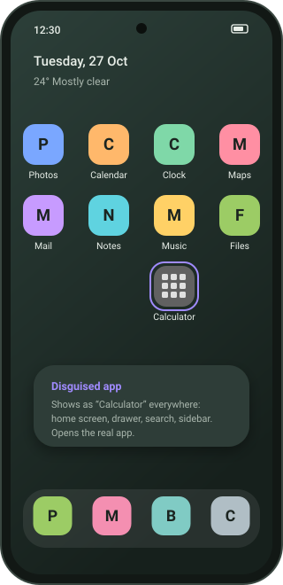
Lock apps
WhereDecoy Settings›App locking
- Under Unlock method, choose a Launcher PIN just for Decoy, or your Phone screen lock (its PIN, pattern, password or fingerprint).
- Under Locked apps, tick the apps that should ask first.
- Open one: Decoy asks to unlock before the app appears.
More ways to tune it
- Lock groups Premium: apps that unlock together, each group with its own PIN.
- Duress PIN: typing it instead of the real PIN looks exactly like the app crashing, and the app never opens.
- Re-lock when the screen turns off, and a delay after unlocking before an app asks again.
- Trusted network: no unlock needed while you're on your home Wi-Fi.
- Failed attempts: how many wrong PINs before it gets stricter.
Lock the settings too
In Decoy Settings › Settings lock & secrets, turn on Ask before opening Settings so nobody can undo your setup. You can also hide the Settings button.
With the accessibility service on (Decoy Settings › Accessibility permission), a locked app also asks when it's opened another way, such as from a notification. Decoy explains what it's used for before you turn it on.
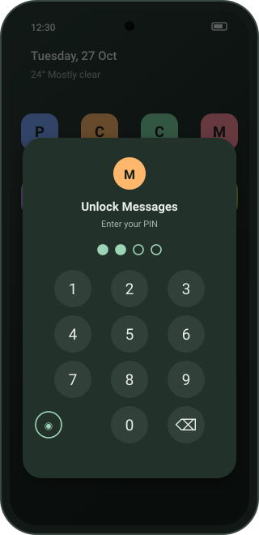
Intruder gallery Premium
WhereDecoy Settings›Intruder gallery
Turn it on and Decoy takes a photo with the front camera when someone types a wrong PIN, with the time and the app they tried. Only you can open the gallery, and you can delete everything in it at once.
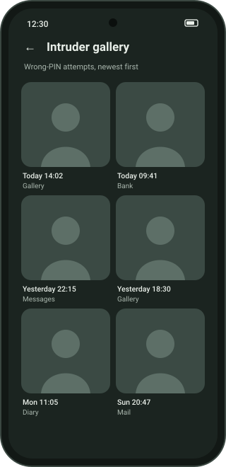
Fake crash Premium
WhereDecoy Settings›Fake crash
Chosen apps show a convincing "keeps stopping" message instead of opening. Everyone else thinks the app is broken; you know the way through.
- Under Apps that fake-crash, pick the apps.
- Choose a Crash style and tap Preview to see it as someone else would.
- Choose your Bypass gesture, the secret way past the message:
- hold one of the message's rows until it lets you through;
- hold a row, then drag in a set direction before letting go;
- press a volume button while the message is showing;
- or double-tap the date at the top of the home screen first, then hold the row.
For more realism, the message can arrive a moment after the tap, as a real crash does, and can show a fake crash report afterwards.
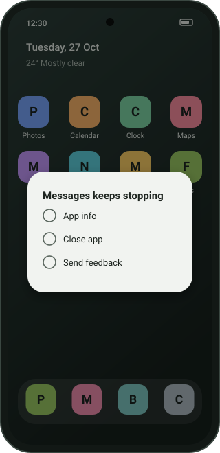
File vault Premium
WhereDecoy Settings›File vault›Open file vault
- Under Unlock with, use the same lock as your apps, a File vault PIN of its own, or the phone's screen lock. Fingerprint can be allowed too.
- Open the file vault and add photos, videos, documents or any other file.
The files are copied into Decoy and encrypted. A gesture or your draw-to-reveal shape can open the vault straight away.
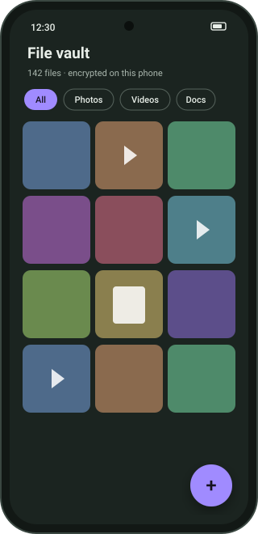
Kid, Guest and Phone modes Premium
WhereDecoy Settings›Profiles
A mode is a stripped-back home screen with only the apps you allow. Hand the phone to a child, a friend or a guest, and they can't wander into anything else.
Set one up
- Pick Kid mode, Guest mode or Phone mode, or tap Create a mode for your own, with its own name and icon.
- Under Allowed apps, tick what it may use. Tick Decoy Phone to give it a phone that only calls the people you add.
- Choose the extras: Full screen, a daily Time limit, and Lock every other app, which sends anything not on the list back to the mode's home screen.
- Under Leaving a profile, choose the phone's screen lock or a PIN just for leaving modes.
Start a mode
- Tap Enter next to it in Profiles;
- set a gesture to Enter Kid mode, Enter Guest mode or Enter Phone mode;
- or add its shortcut to the home screen from the Widgets list.
Leave a mode
Tap the lock at the top of the mode's home screen and unlock with your screen lock, fingerprint or profile PIN. When the time limit runs out, a "time's up" screen covers everything until you unlock.
With the accessibility service on, the notification panel and quick settings are shut again the moment they're pulled down, so nobody gets to Android's settings from a mode.

Decoy Phone New
Decoy's own dialler for modes. It lists only the contacts you add, so a borrowed phone can call home without showing your whole contact list.
WhereDecoy Settings›Profiles›a mode›Phone contacts
- Add the people it may call. They're copies kept in Decoy: changing them never touches your phone's contacts.
- Turn the keypad on or off for that mode. It's off in Kid mode to start with, so children can only call the people you added.
- Optionally, clear the call history each time the mode starts.
Using it
- Phone mode opens straight on the keypad, with recent calls above it. In other modes, Decoy Phone is a tile on the mode's home screen.
- Switch between Keypad and Contacts with the tabs at the bottom, or swipe left and right.
- Tap the delete key to remove a digit; hold it to clear the whole number. Hold 0 for +.
- Keys play their dial tones and vibrate, following the phone's own "Dial pad tones" and touch-vibration settings.
- With the Phone permission, calls start straight away; without it, the phone's dialler opens with the number in.
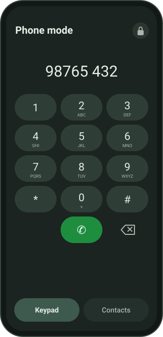
Senior mode New
WhereHome settings›Home screen›Layout›Senior
A simple home screen for a parent or grandparent: a big clock, big buttons for favourite people and apps, SOS, the torch, reminders and an easy phone screen. A four-step setup gets it ready, and a PIN keeps anything from changing by accident.
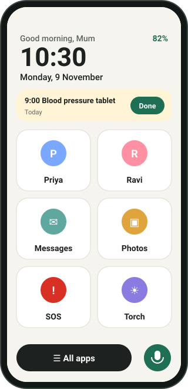
Sleeping mode and mindful pauses
Sleeping mode Premium
WhereDecoy Settings›Sleeping mode
Set hours, such as 10 pm to 7 am, when chosen apps are locked, hidden or fake-crash on their own, then come back by themselves.
Mindful friction
WhereDecoy Settings›Mindful friction
- Breathing pause: wait and breathe for a few seconds before a distracting app opens.
- Intent prompt: say why you're opening it first: a quick check (2 min), work (15 min) or leisure (10 min).
- Open counters: a small number by each app showing how often you opened it today.
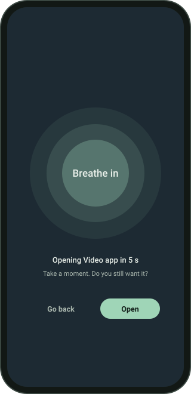
Layouts and icons
WhereHome settings›Home screen›Layout
- Off: an empty home screen you arrange yourself; swipe up for the app drawer.
- Classic: every app placed across pages, no drawer.
- Mixed: the pages of Classic, and the drawer too.
- Text: app names instead of icons, in a grid, a list or across pages, with your own font, size and colours.
- Senior: the Senior mode home screen.
Each layout keeps its own home screen, so switching back brings it back as you left it.
In General pick an icon pack, themed Material You icons, the icon shape and your accent colour; in Home screen the grid size; and in App drawer the number of columns and icon style.
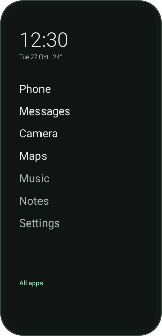
Widgets
WhereHold an empty spot on the home screen›Widgets
- Pick an Android widget or one of Decoy's own: weather, clocks, media, notes, Bluetooth battery, a photo slideshow, quick toggles and more.
- Drag it where you want it. Hold it to resize it or change its options.
Widgets can be stacked to swipe through, and there's a widget page too, a scrolling page of widgets of its own (Home screen › Feed & widget page).
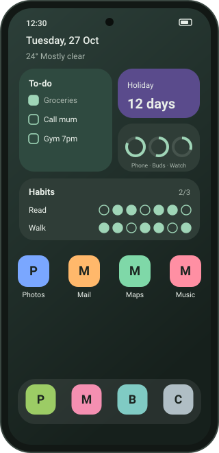
Gestures
WhereHome settings›Gestures
Choose what happens when you double tap, swipe up or down, swipe with two fingers, pinch in or out, double tap at the top, tap with two fingers, swipe on the dock, or shake the phone.
Each one can open an app, the drawer, search, the notification panel or the sidebar, turn on the torch, take a screenshot, change the volume or brightness, play or pause music, start Kid, Guest or Phone mode, open the file vault or draw to reveal hidden apps.
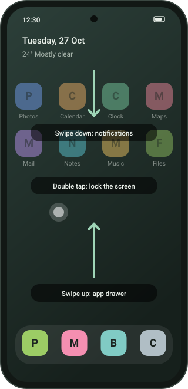
Sidebar
WhereDecoy Settings›Sidebar
An edge panel that slides in from the side of the screen with your favourite apps, switches, tools and private shortcuts. Swipe in from the handle, or tap it, and move the handle wherever it's comfortable. Show one panel at a time as tabs, or everything in one scroll.
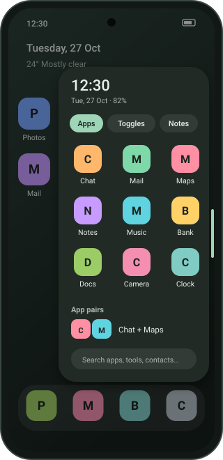
Animations
WhereHome settings›Animations
- Start with a motion style: Icon zoom, Fluid, One UI, Pixel, Snappy, Bouncy or Calm.
- Fine-tune Opening apps and Closing apps: style, speed, curve, colour and how big the icon grows.
- Then the home screen (page turns, unlock, tap ripples), widgets, the app drawer and folders.
Every option plays a live preview with your own apps before you pick it. Choose "None" for any of them, or turn on "Remove animations" in Android's accessibility settings to switch them all off.

Backup and Keep apps
WhereHome settings›General›Backup & restore
- Tap Save backup to a file and choose where it goes. Leave Include home screen layout on to keep your icons and widgets in their places.
- On the new phone, install Decoy and tap Restore from a file.
- If the backup has apps this phone doesn't have yet, choose Keep placeholders: each stays in its spot as a grey icon. Tap one to install the app, and the real icon takes over.
Turn on Keep apps that aren't installed and icons also stay put if an app goes missing while Decoy isn't running, after a reset or a move to a new phone. Apps you uninstall yourself are still removed.
PINs, the secret unlock code and vaults are never written to a backup file.
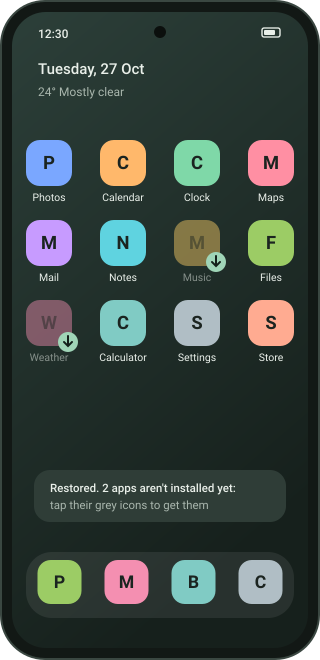